04 / 06Taigh ClòCompetition entry · Tiny home · Vizcom2026
Taigh Clò
The Cloth House. A weaver’s tiny home on the Isle of Harris.
Entry · Vizcom Tiny Home Challenge 2026
Vizcom asked for a home of 100 to 400 square feet, on a real site, shaped by the person who lives there. I chose the Bays of Harris and a Harris Tweed weaver, whose house also has to be her workshop.
- My role
- Site research, persona, hand sketch, plan, materials and every Vizcom iteration
- Competition
- Vizcom Tiny Home Challenge (opens in a new tab), entered November 2026
- Site
- Bays of Harris, Outer Hebrides
- Size
- 32.8 m², 353 sq ft inside
- Tools
- Vizcom (Modify, Make 3D, Animate), Higgsfield, Canva
01The place
Some of Europe’s oldest rock, and almost no trees.
The Bays of Harris is an almost lunar landscape of bare Lewisian gneiss, broken by lochans, heather and narrow sea inlets along the single-track Golden Road. It gets about 230 wet days a year and full Atlantic gales. The old lazy-beds show how islanders grew food on bare rock using seaweed.
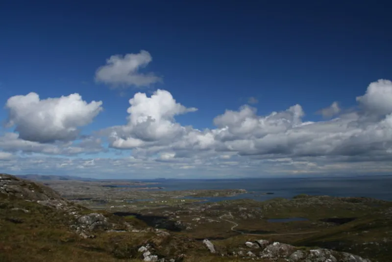
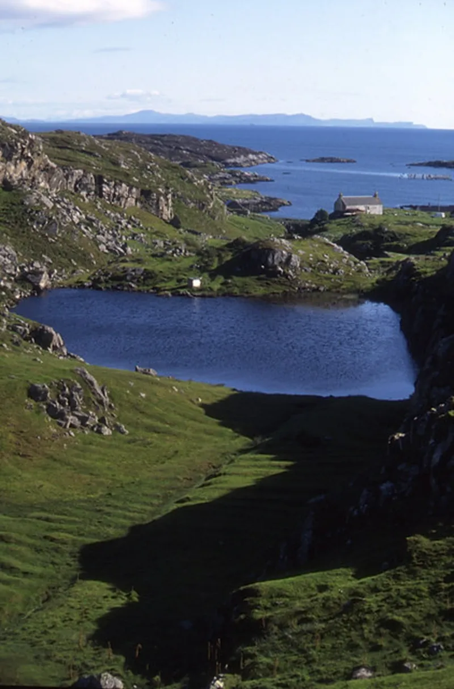
02The person
Everything is built around one treadle loom.
“The cloth knows where it was made. I want a house that does too.”
By law, Harris Tweed must be handwoven by islanders in their own homes, so Eilidh’s house is also her workshop. She needs even north light to judge colour, a dry and airy wool store, a loom floor that doesn’t shake the house, and shelter, water, heat and power all winter.
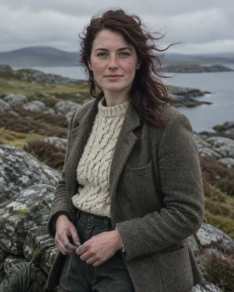
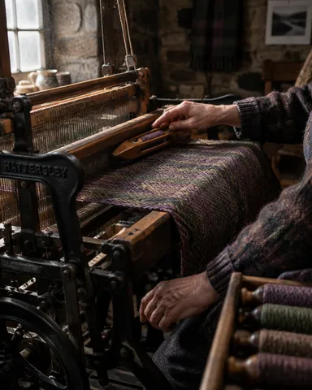
- Peat in the stove, kettle on
- Weaving by the north light
- Mending and colour-matching
- Cloth to the mill van
- Supper, knitting, the box bed
03Survival
Each survival need shaped one part of the house.
- Wind
- Low, rounded, hipped form with roped thatch. The door sits on the lee side behind a porch wind-lock.
- Heat
- 600 mm of stone thermal mass around an insulated timber core, with a peat and wood stove and back boiler.
- Water
- The zinc porch roof feeds a 2,000 L buried cistern with a filter. The burn is the back-up.
- Power
- A 1.5 kW micro wind turbine, 2 kW of solar and a battery for the dark winter months.
- Waste
- A composting WC, with greywater cleaned in a small reed bed before it returns to the ground.
- Food and wool
- Seaweed-fed lazy beds for potatoes and kale, and a dry, airy wool loft over the warm stove.
04Materials
Old stone outside, warm timber inside, one bronze window between them.
Six materials, all found, grown or made in the Outer Hebrides. Each one answers a survival need.
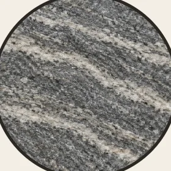
Lewisian gneiss drystone
Gathered on site. 600 mm of thermal mass stores stove heat and stops the wind.
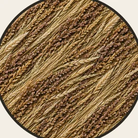
Heather and marram thatch
Grows on the island. Thick thatch insulates, breathes and sheds horizontal rain.
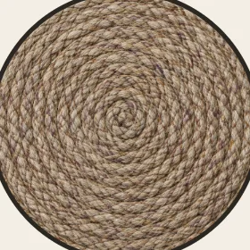
Heather rope and stones
Pins the thatch down against Atlantic gales, the old blackhouse way.
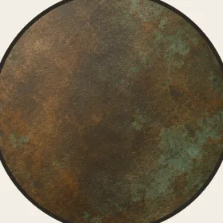
Pre-weathered bronze
The one modern piece. Frames north light for the loom and won’t rust in salt air.
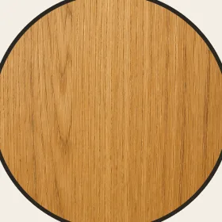
Oiled oak
Warm inner lining and porch frame. Prefab cassettes arrive on the Tarbert ferry.
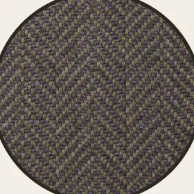
Harris Tweed
Eilidh’s own cloth: box-bed curtain, cushions, draught-stops. The house wears what she weaves.
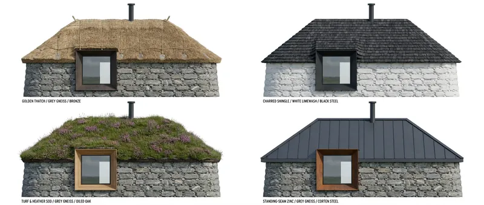
05Iterating in Vizcom
One sketch, one camera, one decision at a time.
I drew the north elevation by hand and pasted it into Vizcom. Every new prompt branched from the last result, keeping the camera and silhouette locked and changing one decision per iteration. Step through them: only the decisions move.
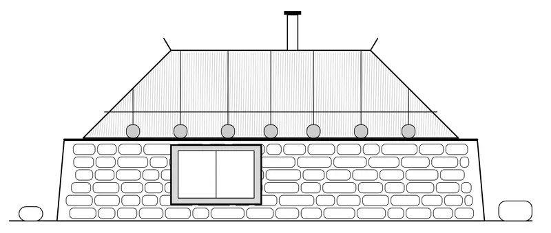
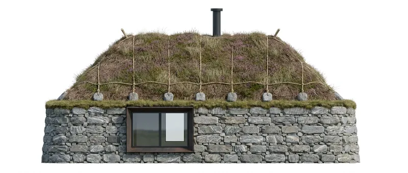
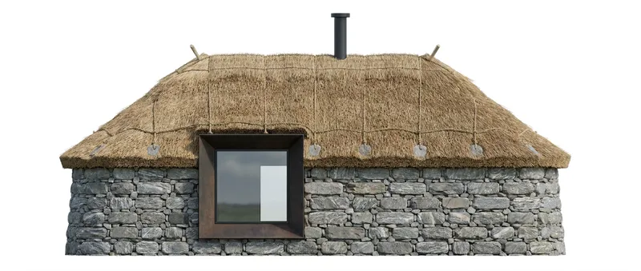
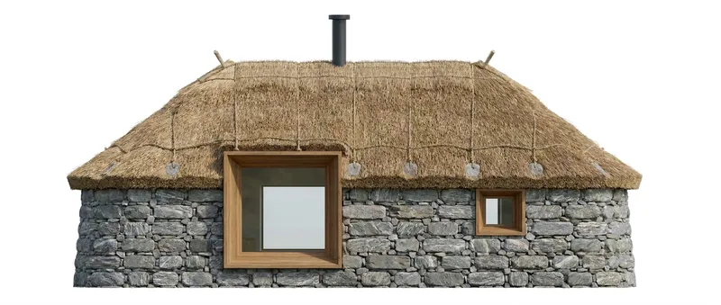
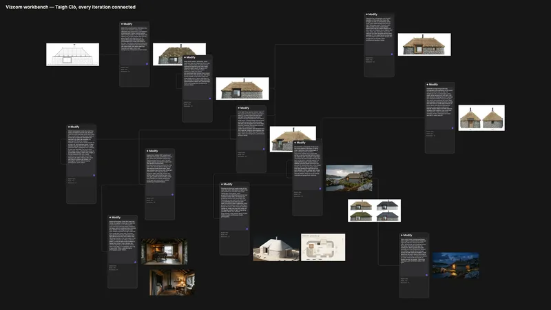
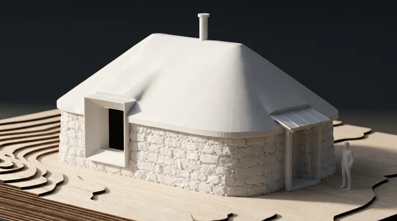
06Plan and elevations
353 square feet, with the loom on its own slab.
- 7.8 × 4.2 m
- inside
- 32.8 m²
- floor area
- 353 sq ft
- within the 100 to 400 brief
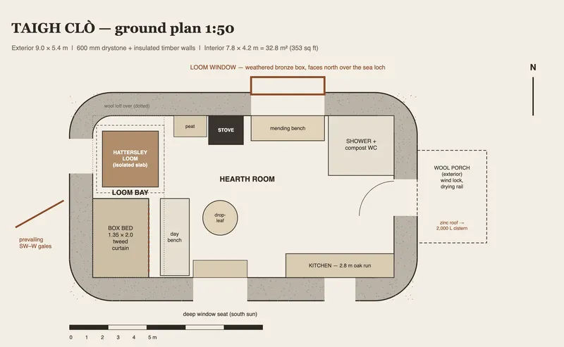
- Loom bay
- The loom on its own isolated slab, with a wool loft above.
- Box bed
- 1.35 × 2.0 m, closed with a curtain of her own tweed.
- Hearth room
- Stove, day bench, drop-leaf table and a south window seat.
- Wool porch
- A wind-lock and drying room outside the sheltered east door.
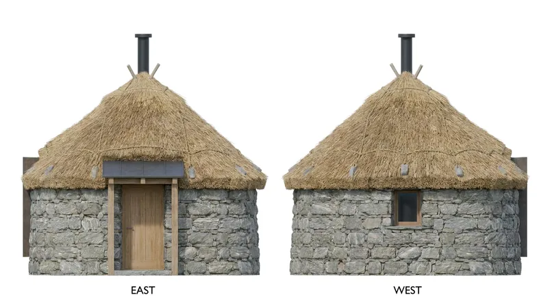
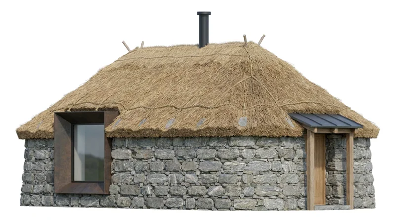
07Interiors
A workshop by day, a hearth by night.
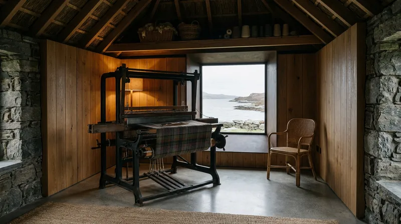
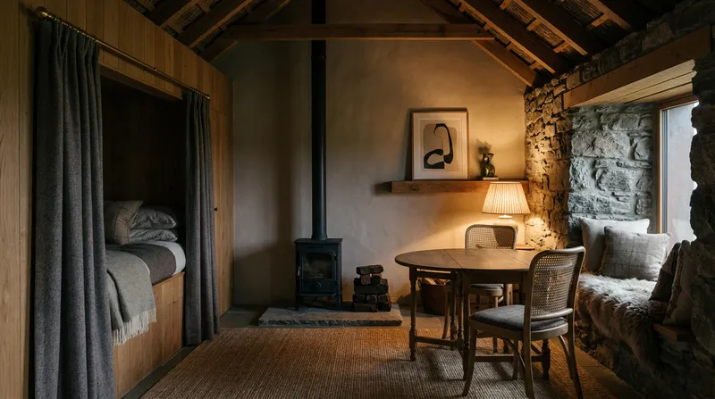
08In its place
She carries the cloth home along the Golden Road.
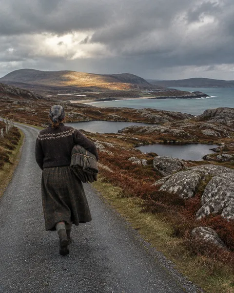
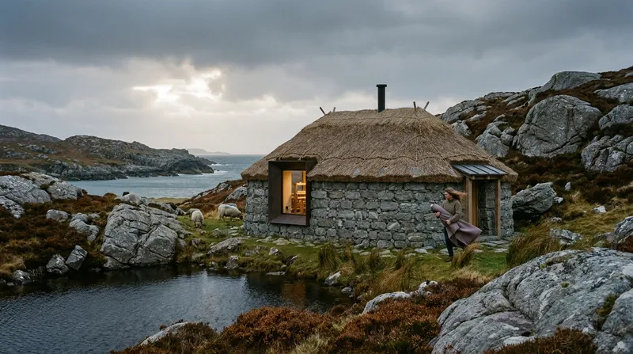
093D model
From render to textured mesh.
Make 3D in Vizcom turned the final exterior render into a textured mesh. The bronze loom window, the rope-net thatch with stone weights, the flue, the timber porch and the solar panel all carried through.
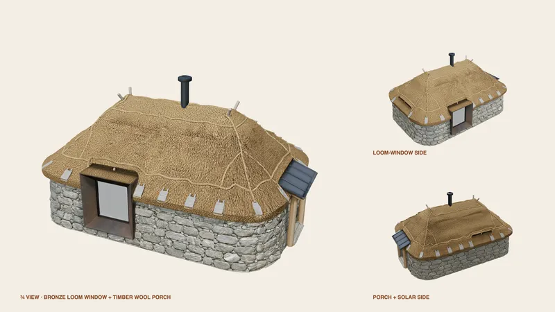
All house images came from one Vizcom workbench, starting from my hand sketch. This is a competition entry, not a built project.
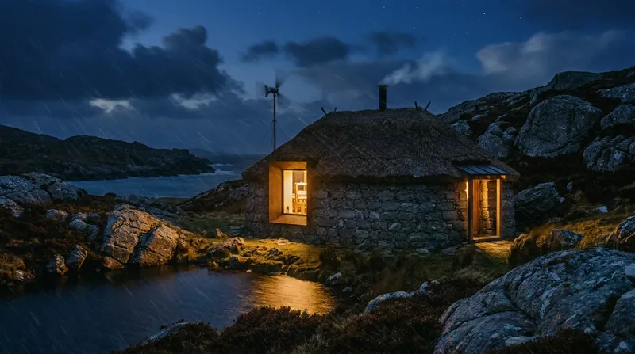
A house woven from its place.
Old stone to fight the Atlantic, a warm timber heart to weave in, and one bronze window to watch the light.
 All work
All work